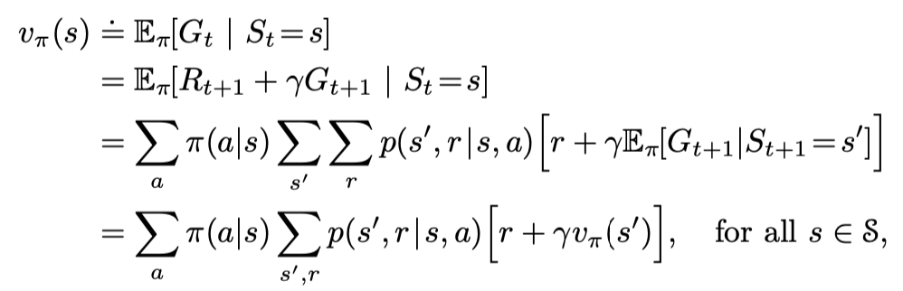

Reinforcement Learning Day 3 (Finite Markov Decision Processes)
- Return, Policy and Value Function
- Optimal Policies and Optimal Value Functions
- Coursera False Questions
- Optimality and Approximation
- Summary
Goal of Reinforcement Learning
- Micheal Littman: identify where reward signals come from;
- develop algorithms that search the space of behaviors to maximize reward signals;
MDPs are a classical formalization of sequential decision making, where actions influence not just immediate rewards, but also subsequent situations, or states, and through those future rewards.
in MDPs we estimate the value q*(s,a) of each action a in each state s, or we estimate the value v*(s) of each state given optimal action selections.
I do not introduce agent-environment here that shall be known before.
In a Markov decision process, the probabilities given by p completely characterize the environment’s dynamics. That is, the probability of each possible value for St and Rt depends on the immediately preceding state and action, $S_{t-1}$ and $A_{t-1}$, and, given them, not at all on earlier states and actions.
In sutton’s book, he will use
$$p(s’,r|s,a) = Pr{S_t = s’,R_t = r| S_{t-1} = s,A_{t-1} = a}$$
This framework may not be suffcient to represent all decision-learning problems usefully, but it has proved to be widely useful and applicable.
Return, Policy and Value Function
In general, we seek to maximize the expected return, where the return, denoted $G_t = R_{t+1}+..R_T$
where T is a final time step. This approach makes sense in applications in which there is a natural notion of final time step.
Formally, a policy is a mapping from states to probabilities of selecting each possible action.
but goes on continually without limit. For example, this would be the natural way to formulate an on-going process-control task, or an application to a robot with a long life span. We call these continuing tasks. The return formulation (3.7) is problematic for continuing tasks because the final time step would be T = 1, and the return, which is what we are trying to maximize, could easily be infinite
The additional concept that we need is that of discounting. According to this approach, the agent tries to select actions so that the sum of the discounted rewards it receives over the future is maximized. In particular, it chooses At to maximize the expected discounted return:
$G_t = R_{t+1} + \gamma R_{t+2} + \gamma^2 R_{t+3} = \sum_{k=0}^{\infty}\gamma^k R_{t+k+1}$
Almost all reinforcement learning algorithms involve estimating value functions—functions of states (or of state–action pairs) that estimate how good it is for the agent to be in a given state (or how good it is to perform a given action in a given state). The notion of “how good” here is defined in terms of future rewards that can be expected, or, to be precise, in terms of expected return.
In my opinion, we shall know that the Gt comes from the end of the epoch ($t+1..end$), therefore, we need infer it from the back end.
We can see the below screenshot from sutton’s book of v(s) and v(s’)

Above equation is bellman equation.
Then we can assume a initalize v value for the answer. Then we perform action. And then we get a rewards and use it to conduct the correct v value (include transfer p value and pi value). Then use gradient descent to update the v value!
The Bellman equation (3.14) averages over all the possibilities, weighting each by its probability of occurring. It states that the value of the start state must equal the (discounted) value of the expected next state, plus the reward expected along the way.
Optimal Policies and Optimal Value Functions
In this part, the authors mentioned $v_\pi$ again. Let me review the $v$. The v value only measure the expected return of this state.
if its expected return is greater than or equal to that of ⇡0 for all states. In other words, $\pi > \pi’$ if and only if $v_\pi(s) >= v_{\pi’} (s)$
Comparing to the original policy value function, the optimal policies and optimal value function represent that the maximum over that choice is taken rather than the expected value given some policy.
Once one has $v*$, it is relatively easy to determine an optimal policy.
Coursera False Questions
Question 9
Case 1: Imagine that you are a vision system. When you are first turned on for the day, an image floods into your camera. You can see lots of things, but not all things. You can’t see objects that are occluded, and of course you can’t see objects that are behind you. After seeing that first scene, do you have access to the Markov state of the environment?
Case 2: Imagine that the vision system never worked properly: it always returned the same static imagine, forever. Would you have access to the Markov state then? (Hint: Reason about $P(S_{t+1} | S_t, …, S_0)$ where $S_t = AllWhitePixels$)
correct answer: You don’t have access to the Markov state in Case 1, but you do have access to the Markov state in Case 2.
Reason: Because there is no history before the first image, the first state has the Markov property. The Markov property does not mean that the state representation tells all that would be useful to know, only that it has not forgotten anything that would be useful to know.
The case when the camera is broken is different, but again we have the Markov property. All the possible futures are the same (all white), so nothing needs to be remembered in order to predict them.
I think the problem want to let me know the markov state has a set or restrict. So the first one we can only use but not is the markov state.
Optimality and Approximation
approximations using arrays or tables with one entry for each state (or state–action pair). This we call the tabular case.
Summary
I extract several key points from the sutton’s book.
- states are the basis for making the choices
- and the rewards are the basis for evaluating the choices. (basis! not bias!)
- the discounted formulation is appropriate for continuing tasks, in which the interaction does not naturally break into episodes but continues without limit.
1 | We try to define the returns for the two kinds of tasks such that one set of equations can apply to both the episodic and continuing cases. |
The two task mentioned above is continous task and discrete task (break into eposides naturlly)
All key points in Sutton’s Book has been presented above. I think this chapter focus on fundmental modelling idea of main algorithm. (e.g., policy, return ,state-value function). It introduce some mathematics formulas and inference in RL. (e.g., Bellman Equation, Optimal Policy). It help me review equations and inference agian and understand the algorithm better.